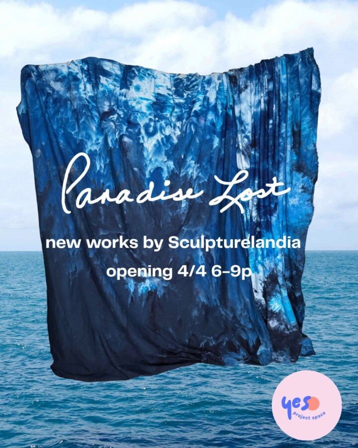

Paradise Lost
Paradise Lost features new work by Sculpturelandia. You are not going to want to miss this amazing total gallery takeover. Remy Bordas and Olivia Juarez have been working day and night sculpting, thinking about time and how to transform your experience as you enter Paradise Lost